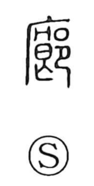

廊

Uncategorized
Kun: | On: rou
corridor ・ gallery ・ veranda
Explanation
廊 is a phono-semantic character: the roofed-structure element evokes a building with sheltering eaves, while 郎 provides the sound rō. An old lexicon glosses it as the earthen walls running along the east and west sides of a great hall, that is, the side passages of the ancestral or state hall (the 廊廟). From this architectural setting, the character came to denote the eaved passage itself—the corridor or gallery flanking a building.